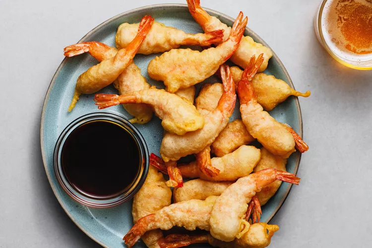

Tempura

Tempura (天ぷら or 天麩羅, tenpura, [tempɯɾa]) is a typical Japanese dish that was originally
introduced to Japan by the Portuguese[1] in Nagasaki through fritter-cooking techniques during
the 16th century.
The dish usually consists of seafood, meat and vegetables that have been
battered and deep fried. The word tempura comes from the Ember Days (quatuor tempora in Latin),
the quarterly periods of fasting in Western Christian churches, where believers go meatless.
Ingredients
- All-purpose flour
- Cornstarch
- Baking powder
- Salt
- Ice-cold water
- Your choice of seafood or vegetables
- Vegetable oil
Steps
- In a mixing bowl, whisk together 1 cup of all-purpose flour,
1/4 cup of cornstarch, 1 teaspoon of baking powder, and a pinch of salt.
- Gradually add 1 cup of ice-cold water to the dry ingredients,
and mix until the batter is smooth and free of lumps. Be careful not to overmix the batter.
- Heat enough vegetable oil in a deep frying pan or a pot until it reaches 350-375°F (180-190°C).
- Dip your choice of vegetables or seafood into the batter, and shake off any excess batter.
- Carefully place the coated ingredients into the hot oil, and fry them for 2-3 minutes or until they are golden brown and crispy.
- Use a slotted spoon or tongs to remove the tempura from the oil, and place them on a wire rack or a paper towel-lined plate to drain off any excess oil.
- Serve the tempura immediately with your choice of dipping sauce, such as soy sauce or tempura dipping sauce. Enjoy!